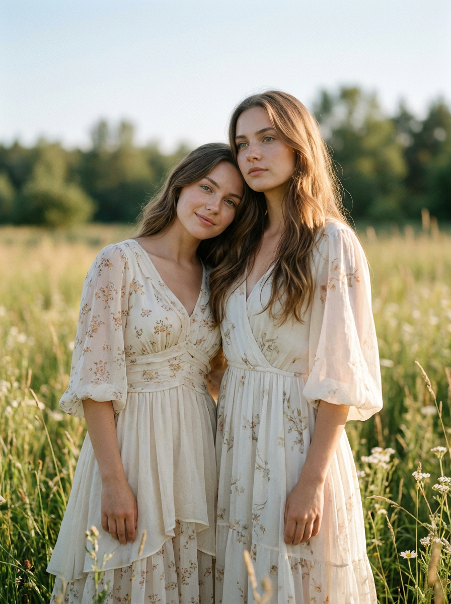
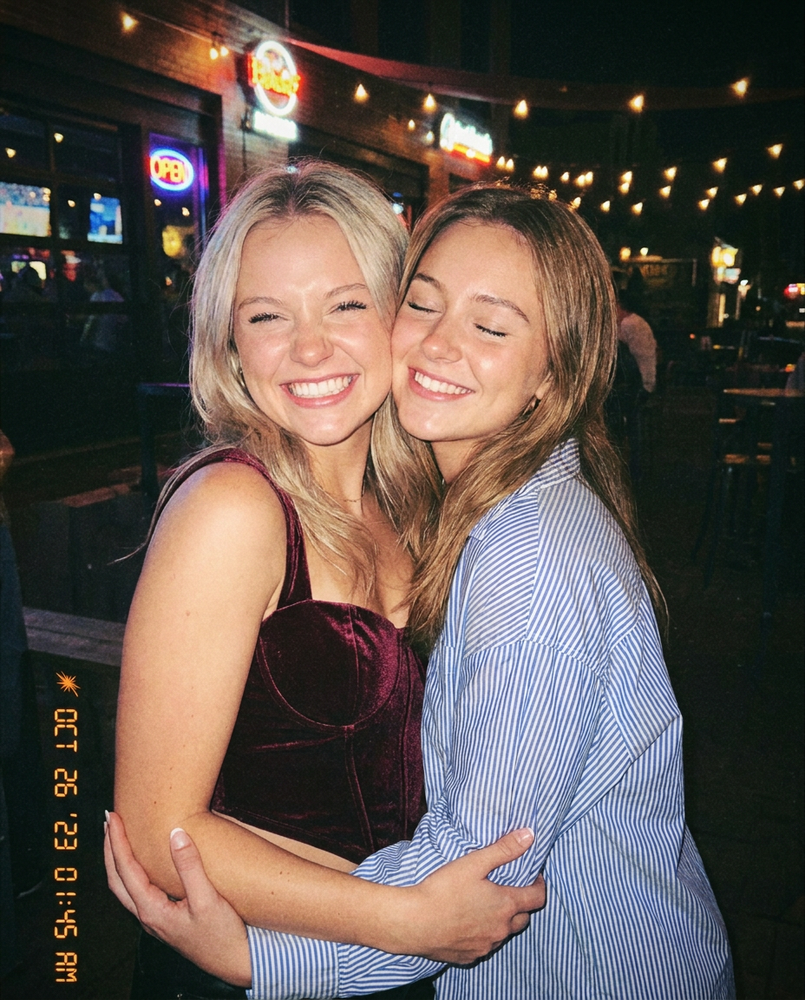
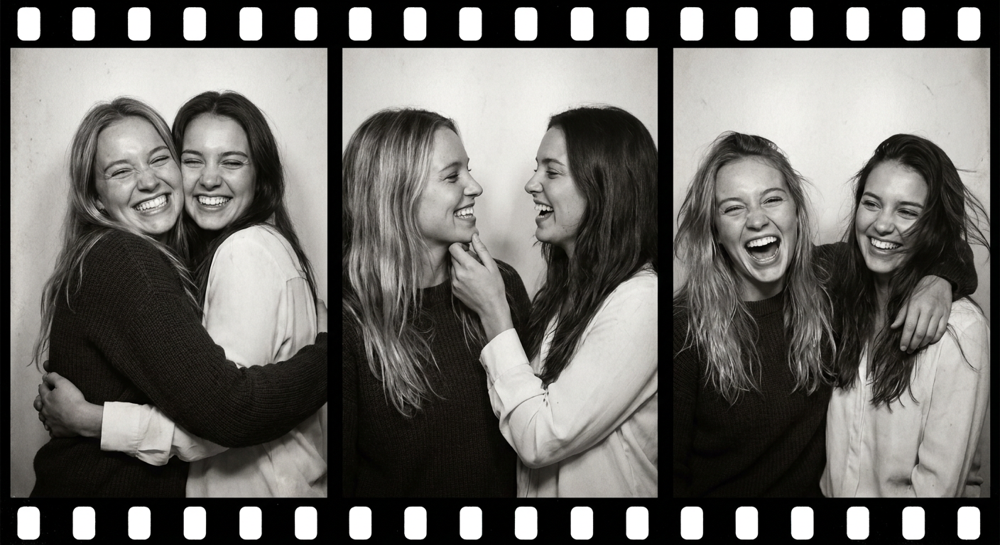
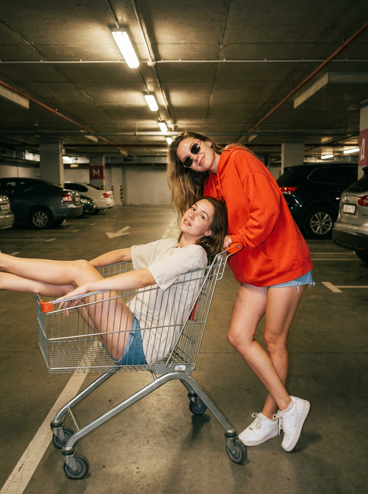
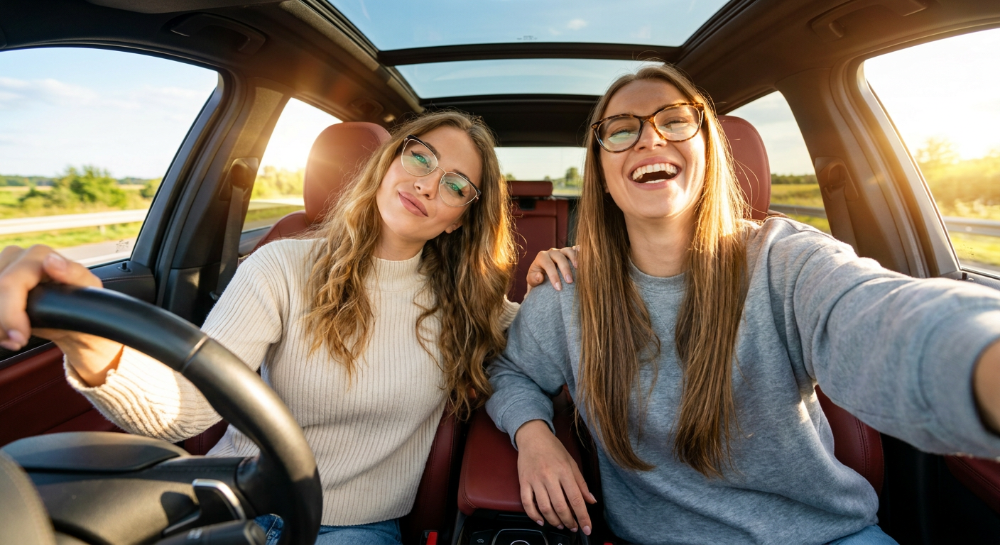
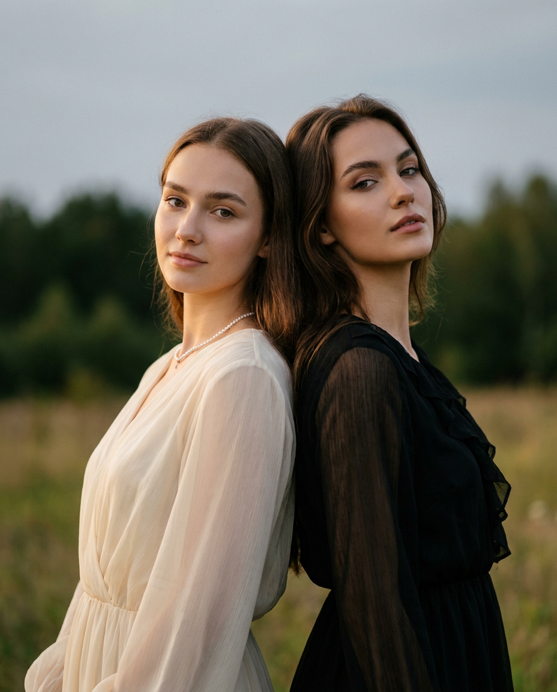
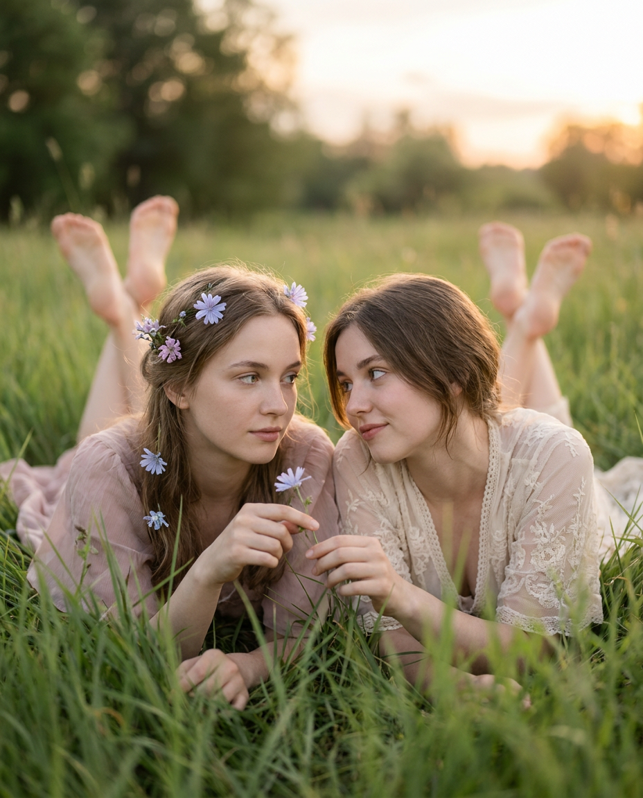
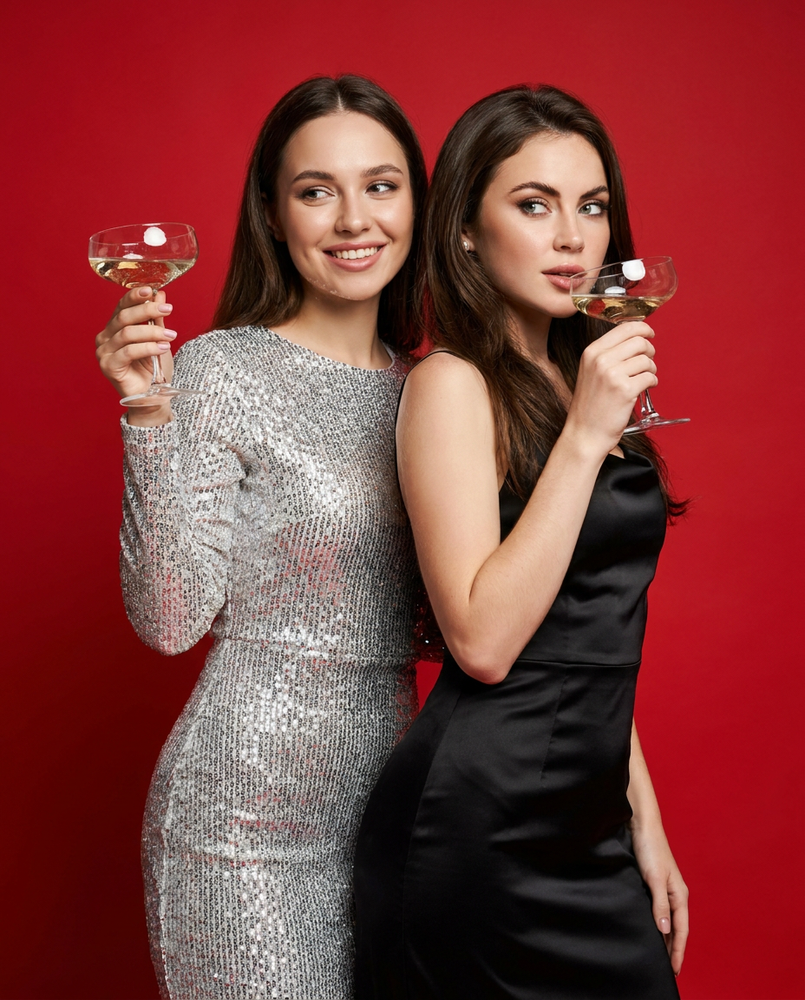
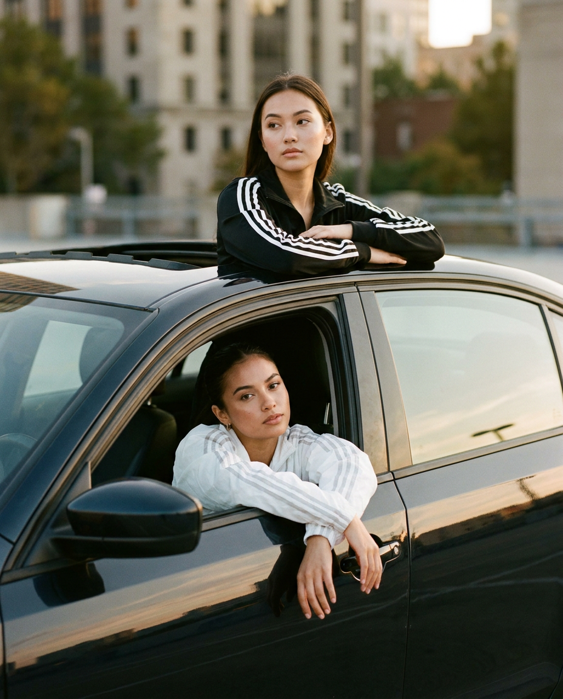
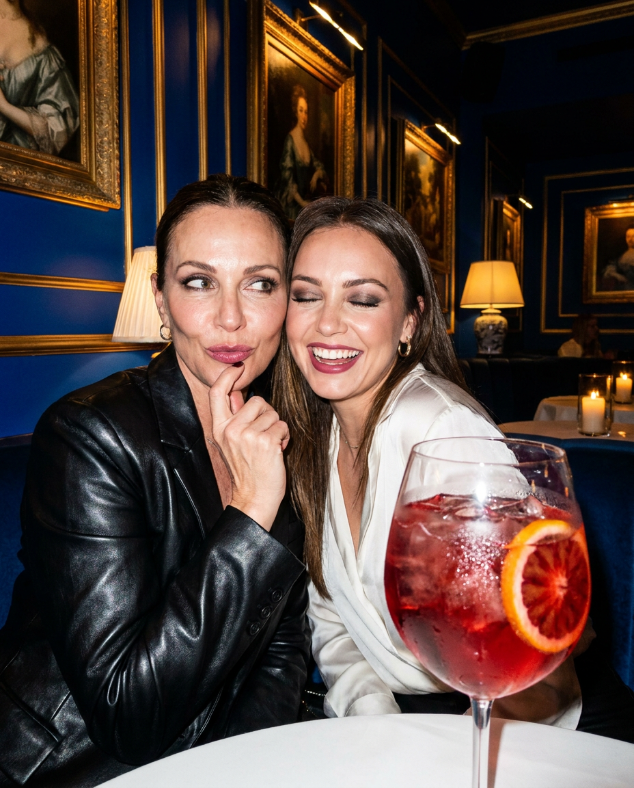

ИИ-фото с подругой: 10 промптов для нейросети

Обычное совместное фото не всегда передаёт настроение: неудачный свет, случайный фон и скованные позы портят даже хороший момент. Генерация помогает собрать нужную сцену с нуля — от тихой прогулки в поле до шумной ночной вечеринки.
В подборке — 10 промптов для фотографий с подругой. Здесь есть съёмка на плёночную камеру, чёрно-белая фотополоса, селфи в автомобиле, кадры в баре, на парковке и в студии. Подставьте два референса лиц и при необходимости уточните одежду, формат и настроение.
Как сгенерировать такое фото: пошагово
Нужен снимок анфас при ровном свете, лицо в кадре целиком, без тёмных очков и головных уборов. Разрешение от 1000 пикселей по короткой стороне. Чем чётче исходник, тем точнее модель повторит черты.
Выберите сценарий ниже и нажмите «Копировать» — текст уйдёт в буфер целиком, вместе с командой сохранения внешности. Эта команда стоит первой строкой и отвечает за то, чтобы на выходе было ваше лицо, а не случайное.
Кнопка «Сгенерировать» рядом с каждым промптом открывает модель в новой вкладке. Nano Banana Pro работает с референсом лица — в отличие от моделей, которые генерируют портрет с нуля и узнаваемость теряют.
Промпт — в поле ввода, портрет — через загрузку референса. Порядок значения не имеет, но без референса команда сохранения внешности работать не будет: модели нечего сохранять.
Для сторис и ленты берите 9:16, для превью и обложек — 4:3. Первый результат редко идеален: если поза или свет ушли не туда, поправьте соответствующую часть промпта и запустите заново. Обычно хватает двух-трёх итераций.
10 промптов для генерации
1. Нежная съёмка в поле
Строго сохранить внешность по загруженному референсу: черты лица, пропорции, мимику и текстуру кожи без изменений. Вертикальный фотореалистичный fashion-lifestyle кадр двух подруг в высокой траве или цветущем лугу. Съёмка напоминает нежный countryside editorial: тёплая романтичная палитра, мягкий рассеянный свет, лёгкое dreamy-настроение. Девушки стоят рядом, почти соприкасаясь плечами. Левая слегка склоняет голову и прислоняется к плечу или виску правой, создавая ощущение доверия и спокойной дружбы. Правая смотрит в камеру с мягкой естественной улыбкой. Одежда — светлые воздушные образы в пастельных тонах, натуральные ткани, аккуратный повседневный styling. Ветер едва заметно двигает волосы и траву. Снимок выглядит как журнальная фотография, объектив 85 мм, малая глубина резкости, фон мягко размыт, вертикальный формат 4:5, высокая детализация кожи и ткани. Слева — первый референс лица, справа — второй.
2. Ночное фото со вспышкой

Строго сохранить внешность по загруженному референсу: черты лица, пропорции, мимику и текстуру кожи без изменений. Фотореалистичный вертикальный candid snapshot двух лучших подруг, снятый ночью на старую плёночную камеру или телефон с прямой вспышкой. Они стоят очень близко в тёмной уличной локации, крепко и радостно обнимаются после вечеринки или выхода из бара. Левая девушка широко и искренне улыбается, слегка поворачивает лицо к объективу; выражение живое, счастливое, без постановочности. Правая смеётся и прижимается к подруге, поза свободная, будто кадр пойман случайно. На заднем плане — глубокие тени, размытые огни, намёк на ночной город. Используйте характерные для плёнки зерно, лёгкую цветовую неоднородность, небольшую засветку вокруг вспышки и естественные несовершенства экспозиции. Жёсткий свет подчёркивает лица, фон уходит в темноту. Вертикальный формат 4:5, эффект любительского ночного фото. Слева — первый референс, справа — второй.
3. Фотополоса из трёх кадров

Строго сохранить внешность по загруженному референсу: черты лица, пропорции, мимику и текстуру кожи без изменений. Создай чёрно-белую фотореалистичную фотополосу в духе vintage photobooth strip с одной и той же парой подруг. На вертикальном листе размести три горизонтальных кадра один под другим, как настоящая распечатка из автоматической фотобудки. Во всех трёх сценах девушки остаются узнаваемыми и выглядят как участницы одной короткой съёмки. В первом кадре они смотрят в объектив и улыбаются, во втором смешно меняют выражения лиц и слегка наклоняются друг к другу, в третьем обнимаются и смеются. Эмоции должны быть разными, но связанными, без резких изменений внешности, причёсок и одежды. Добавь мягкий контраст, плёночное зерно, небольшие серые полутона и тонкие белые поля между снимками. Камера расположена прямо перед ними, композиция симметричная, фон нейтральный. Итог — единый вертикальный лист фотобудки, а не три отдельных изображения. Левая девушка во всех кадрах соответствует первому референсу, правая — второму.
4. Дерзкий кадр на парковке

Строго сохранить внешность по загруженному референсу: черты лица, пропорции, мимику и текстуру кожи без изменений. Вертикальная фотореалистичная fashion/lifestyle-фотография двух подруг в подземной парковке с игривой, дерзкой и энергичной атмосферой. В центре композиции — металлическая тележка для покупок. Девушка из первого референса сидит внутри тележки: ноги вытянуты вперёд и расслабленно лежат в корзине, корпус немного откинут назад, одной рукой она держится за борт. На лице — озорная улыбка и уверенный взгляд. Девушка из второго референса стоит рядом, одной рукой опирается на ручку тележки, другой поправляет волосы или держит ремень сумки; она смотрит в камеру с лёгкой усмешкой. Образы — модные повседневные: куртки, топы, джинсы, заметные аксессуары. Холодный свет потолочных ламп смешивается с локальными бликами на металле, на заднем плане видны бетонные колонны, разметка и пустые парковочные места. Съёмка с широкоугольным объективом 28 мм, лёгкая перспектива, вертикальный формат 4:5, эффект живого editorial-кадра.
5. Солнечное селфи в машине

Строго сохранить внешность по загруженному референсу: черты лица, пропорции, мимику и текстуру кожи без изменений. Яркое широкоугольное селфи двух подруг в салоне автомобиля солнечным днём, будто кадр спонтанно снят с переднего сиденья. Слева, за рулём, девушка с длинными волнистыми волосами в уютном кремовом свитере в рубчик из мягкого хлопка. На ней очки «кошачий глаз» с тонкой золотистой оправой. Она слегка наклоняется к центру, одной рукой держит руль, кокетливо улыбается и смотрит прямо в камеру. Справа сидит девушка с длинными гладкими волосами в сером оверсайз-свитшоте из мягкого футера. Крупные очки в роговой оправе подчёркивают её образ. Она широко смеётся, слегка запрокинув голову; одна рука касается плеча подруги, другая лежит на центральной консоли. Через боковые окна и люк пробиваются солнечные лучи, на лицах мягкие блики, интерьер выглядит светлым и живым. Объектив 20–24 мм, лёгкое и естественное искажение селфи, высокая детализация, вертикальный формат 4:5. Слева — первый референс, справа — второй.
6. Спина к спине на природе

Строго сохранить внешность по загруженному референсу: черты лица, пропорции, мимику и текстуру кожи без изменений. Фотореалистичный вертикальный портрет двух девушек на природе, стоящих очень близко спина к спине. Они слегка разворачивают лица к камере, а сама композиция выглядит как спокойная fashion-editorial съёмка с ощущением доверия и внутренней силы. Левая девушка смотрит прямо в объектив мягко и спокойно, её выражение нейтральное, нежное, уверенное. Правая смотрит в камеру с чуть более собранным, задумчивым выражением, сохраняя естественность. Одежда — лаконичные современные образы в природной гамме: кремовый, бежевый, оливковый или серо-коричневый. Позади — высокая трава, лёгкий ветер и размытый пейзаж без лишних деталей. Свет мягкий, дневной, с деликатным контровым ореолом по волосам. Камера на уровне глаз, объектив 85 мм, малая глубина резкости, чёткие лица и плавное размытие фона. Вертикальный формат 4:5, чистая журнальная цветокоррекция. Слева — первый референс, справа — второй.
7. Разговор в высокой траве

Строго сохранить внешность по загруженному референсу: черты лица, пропорции, мимику и текстуру кожи без изменений. Вертикальная фотореалистичная fashion-фотография двух подруг, лежащих на животе или полулёжа в мягкой высокой траве. Девушки находятся очень близко, их головы расположены примерно на одном уровне, лица обращены друг к другу, будто они тихо разговаривают и делятся личными новостями. Левая смотрит на правую с мягким внимательным выражением, правая отвечает спокойным взглядом и лёгкой улыбкой. Поза расслабленная, без напряжения в плечах и руках; между ними ощущаются доверие, близость и мечтательное настроение. Одежда — нежные повседневные fashion-образы из натуральных тканей, волосы свободно лежат на траве. Съёмка проходит при мягком дневном или предзакатном свете, отдельные травинки находятся на переднем плане и слегка размыты. Используйте объектив 50 мм, низкую точку съёмки на уровне травы, естественную глубину резкости и тёплую зелёно-золотистую палитру. Вертикальный формат 4:5, высокая детализация лиц, волос и фактуры растений. Слева — первый референс, справа — второй.
8. Красный фон и бокалы

Строго сохранить внешность по загруженному референсу: черты лица, пропорции, мимику и текстуру кожи без изменений. Фотореалистичная вертикальная fashion-съёмка двух взрослых девушек в студии на ярко-красном фоне. Они стоят очень близко и легко обнимаются, словно участвуют в luxury party editorial или рекламной кампании. Левая девушка выглядит радостной, расслабленной и немного игривой; она держит широкую бокальную чашу с белым вином или шампанским и слегка поднимает её к лицу. Правая стоит чуть впереди или сбоку, держит второй бокал у губ или в руке и смотрит в сторону с уверенным, немного загадочным glamorous-выражением. Образы эффектные, но естественные: вечерние наряды, аккуратные укладки, выразительные аксессуары без карикатурности. Красный фон ровный, насыщенный, с мягкой студийной тенью за фигурами. Свет направленный, рекламный, с бликами на стекле и жидкости, кожа выглядит натурально. Объектив 70–85 мм, вертикальный формат 4:5, чистая высокая детализация, модная журнальная цветокоррекция. Для лиц используй загруженные референсы без смешения индивидуальных черт.
9. Автомобиль на закате

Строго сохранить внешность по загруженному референсу: черты лица, пропорции, мимику и текстуру кожи без изменений. Вертикальная фотореалистичная fashion-фотография двух подруг рядом с автомобилем в городской среде на закате. Машина занимает заметную часть композиции, вокруг — улица, бетонные здания, отражения тёплого солнца на кузове и длинные вечерние тени. Девушка из первого референса стоит или полустоит через открытый люк на крыше, опираясь руками на края; корпус немного наклонён вперёд, взгляд направлен в сторону или чуть в камеру, выражение холодное, спокойное и задумчивое. Девушка из второго референса находится внутри машины у открытого окна или двери, расслабленно опирается на неё и смотрит наружу с лёгкой улыбкой. Их одежда — стильные городские образы: кожаная куртка, топ, джинсы, лаконичные украшения. Съёмка с объективом 35 мм, естественная перспектива, золотой час, мягкий контровой свет и лёгкие блики на волосах. Вертикальный формат 4:5, editorial-настроение, без ощущения опасной постановки или движения автомобиля.
10. Ночная сцена в баре

Строго сохранить внешность по загруженному референсу: черты лица, пропорции, мимику и текстуру кожи без изменений. Фотореалистичный вертикальный candid nightlife snapshot двух лучших подруг за столом в стильном тёмном баре или ресторане. Они сидят очень близко друг к другу, интерьер вокруг элегантный: глубокие тени, тёмное дерево, мягкие локальные лампы, размытые огни на заднем плане. Левая девушка слегка подаётся вперёд и касается подбородка пальцами, смотрит в сторону с игривым, спокойным и немного загадочным выражением. Правая сидит рядом, поворачивается к камере и улыбается так, будто подруги только что обменялись шуткой. На столе — бокалы, небольшие тарелки и детали вечернего выхода, но без визуального беспорядка. Снимок сделан прямой вспышкой: лица ярко освещены, фон быстро уходит в темноту, на коже и стекле появляются резкие блики. Добавь лёгкое плёночное зерно и естественную случайность композиции. Объектив 35 мм, вертикальный формат 4:5, высокая детализация, эффект настоящего ночного фото. Слева — первый референс, справа — второй.
Что важно учесть в этом стиле
Для фото с подругой лучше сразу зафиксировать роли: кто находится слева, кто справа, кто сидит за рулём или стоит у машины. Это снижает риск, что нейросеть поменяет девушек местами или смешает черты лиц. Если сервис поддерживает референсы, загружайте их по одному и подписывайте в описании.
Настроение задают не только слова «красивое фото», а конкретные параметры: прямой свет вспышки, объектив 35 мм, плёночное зерно, красный студийный фон или золотой час. Для портретов выбирайте вертикальный формат 4:5, а для фотополосы отдельно указывайте три кадра на одном листе.
Идеи для вариаций
- Замените поле на пляж с ветром, яблоневый сад или крышу дома на рассвете.
- Сделайте ночной кадр в такси, у неоновой вывески или на пустой заправке.
- Для фотобудки задайте эмоции по нарастанию: спокойная улыбка, смешная гримаса, крепкое объятие.
- В парковке замените тележку на винтажный велосипед, скейтборд или багажник автомобиля.
- В студии попробуйте синий, молочный или кобальтовый фон вместо красного.
- Добавьте общий аксессуар: одинаковые заколки, цветы, плёночную камеру или два стакана лимонада.
Как собрать свой промпт
Начните с формата и типа съёмки: «вертикальный фотореалистичный портрет», «ночной candid snapshot» или «фотополоса из трёх кадров». Затем назовите локацию, расположение девушек и действие. Фразы «девушка слева» и «девушка справа» полезнее, чем длинное описание без координат.
После этого добавьте одежду, эмоции, свет и технику. Укажите объектив, глубину резкости, характер фона и соотношение сторон. Если результат расплывается, не переписывайте всё сразу: меняйте один параметр за попытку и делайте 3–5 генераций с одинаковым базовым описанием.
Ошибки, из-за которых кадр не получается
- Слишком общая сцена. Без позы и положения в кадре девушки могут оказаться далеко друг от друга или смотреть в разные стороны.
- Не обозначены референсы. Подпишите, какой файл относится к левой и правой девушке, особенно в групповых сценах.
- Противоречивый свет. Не смешивайте прямую ночную вспышку с мягким рассеянным студийным светом в одном промпте.
- Слишком много аксессуаров. Очки, бокалы, руки и украшения повышают риск лишних пальцев и деформаций.
- Фотополоса описана как один портрет. Отдельно укажите три кадра, общий лист и связанные эмоции.
- Не задан формат. Вертикальный кадр 4:5 или 9:16 лучше прописать заранее, а не пытаться обрезать случайный результат.
Частые вопросы
Как сделать такое ИИ-фото бесплатно?
Попробуйте Kandinsky и Шедеврум — они подходят для генерации сцен по тексту, но точное сходство по двум лицам и сложные позы могут работать нестабильно. В Krea AI и Arena.ai доступны инструменты с референсами и вариациями, однако набор функций, лимиты и качество меняются. Бесплатные режимы обычно ограничивают число попыток, разрешение или скорость. Для знакомых людей используйте снимки только с их согласием.
Как сохранить сходство двух подруг?
Загрузите два чётких портретных референса без сильных фильтров и явно распределите их: первая девушка слева, вторая справа. Добавьте запрет на смешение черт и не меняйте одновременно причёску, возраст и ракурс. Чем сложнее поза и чем меньше лицо в кадре, тем труднее нейросети сохранить узнаваемость.
Какой формат выбрать для публикации?
Для одиночного портрета или сторис подойдёт вертикальный формат 4:5 или 9:16. Для поста с фотополосой лучше просить высокий лист с тремя кадрами один под другим. Если сервис не поддерживает точное соотношение сторон, сгенерируйте изображение крупнее и обрежьте его после проверки лиц и рук.
Что делать, если руки или бокалы искажены?
Упростите сцену и оставьте один главный предмет в руке каждой девушки. Уточните положение пальцев, попросите естественную анатомию и сделайте несколько вариантов с тем же описанием. При сложном кадре сначала добейтесь правильных лиц и поз, а аксессуары добавляйте отдельной итерацией.